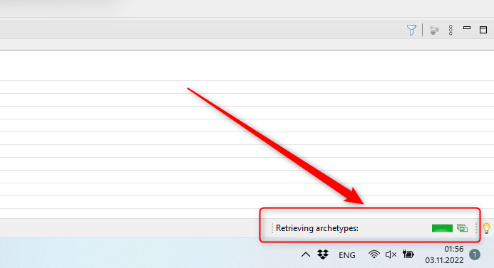
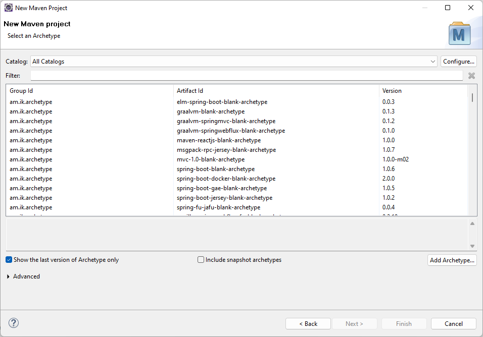
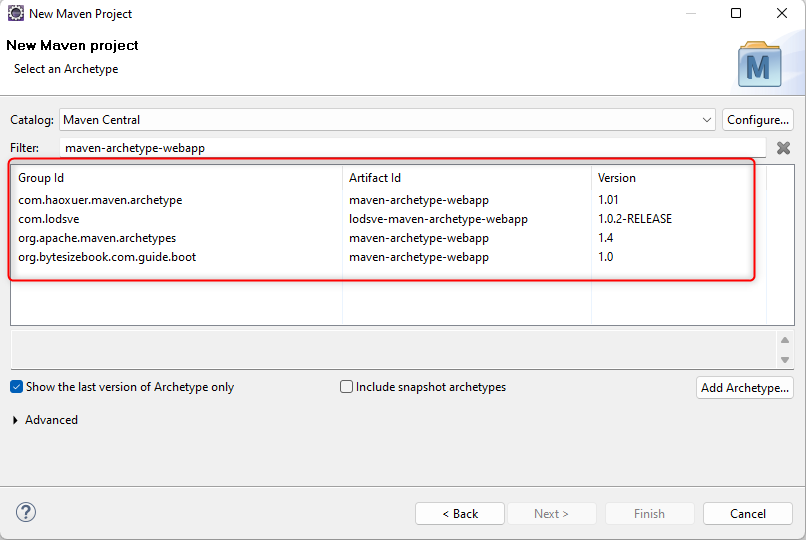

Начиная с этого шага, все окна, которые будут нам открываться, уже более или менее важны для нашего будущего проекта.
И первое окно, которое мы увидим называется Select an Archetype.
Это окно, в котором мы должны выбрать Архетип нашего будущего проекта.
И вот прямо сейчас меня капец как подрывает налить вам кучу воды о том, что такое архетипы (
archetypes)
в Maven-е, но я не скажу ни слова. Ведь вся эта вода уже вылита в соответствующей главе.
ДОБАВЬ ССЫЛКУ НА ГЛАВУ!
Итак, перед нами окно Select an Archetype.
Когда оно только появится на экране, оно будет пустым:
Это потому, что прямо сейчас Eclipse загружает все известные ему архетипы из всех известные ему каталогов. И если вы посмотрите в правый нижний угол Eclips-а, то вы увидите прогресс загрузки архетипов:
Через некоторое время (все зависит от скорости вашего интернета) окно заполнится архетипами:
И теперь среди этого списка нужно найти тот архетип, который создаст нам Web-приложение для Maven. Однако, здесь есть два интересных замечания...
Замечание первое:
Раньше Eclipse загружал очень мало архетипов. Окно выглядело вот так:
Покажи скрин окна из старого эклипса, если там было действительно мало архетипов!
Это были архетипы с Maven Central Repository, да и то, скорее всего, не все.
Но это были те архетипы, которые действительно нам нужны.
Но, начиная с какой-то версии (точно не помню, с какой) Eclipse вдруг решил, что мы должны увидеть все архетипы,
которые существуют в мире сегодня.
Проверь:
Замечание второе:
Вы можете воспользоваться Combobox-ом Catalog:, но это вам ничего не даст :)
И покажи скрины :)
Таким образом, у нас остается один выход — воспользоваться фильтром в поле Filter
и ввести в него очень точно: maven-archetype-webapp:
После этого, количество архетипов очень сильно уменьшится:
И все, что нам останется сделать, это выбрать архетип, у которого:
org.apache.maven.archetypesmaven-archetype-webapp
И нажать кнопку Next >
Ура! Наконец-то мы переходим к следующему шагу.